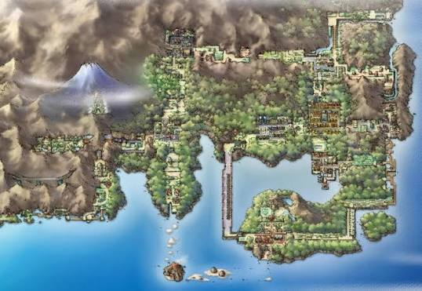
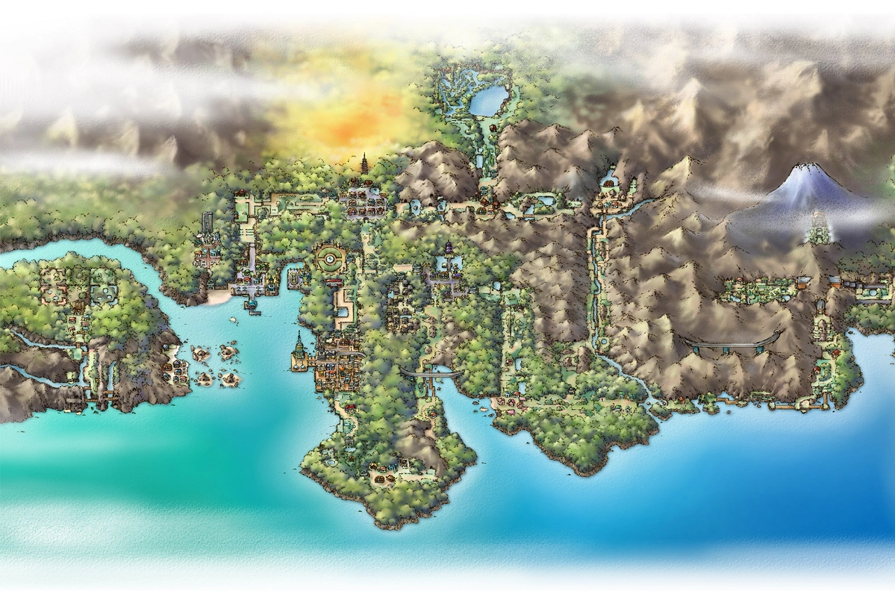
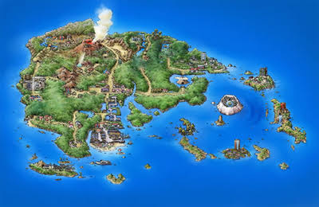
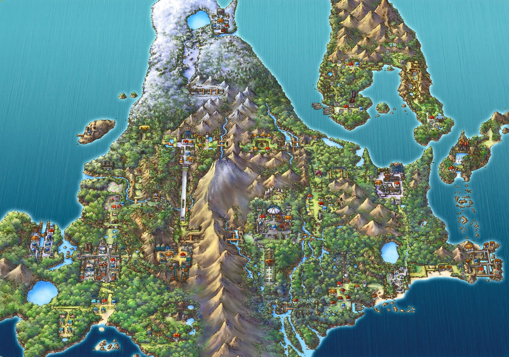
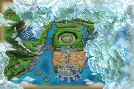
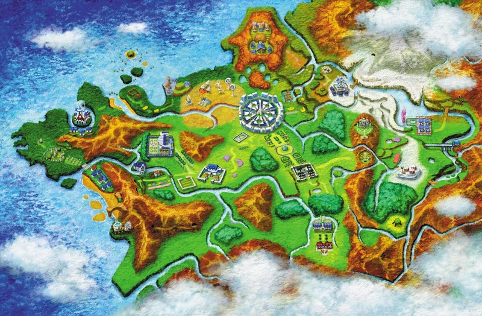
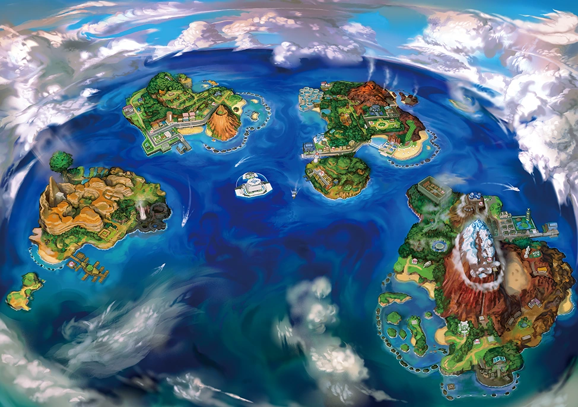
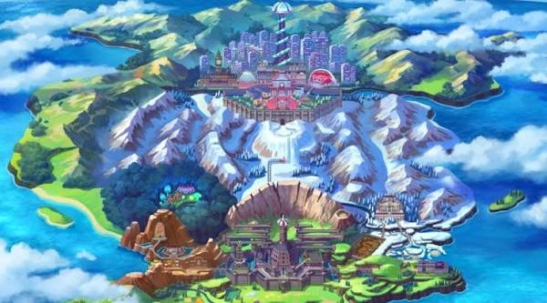
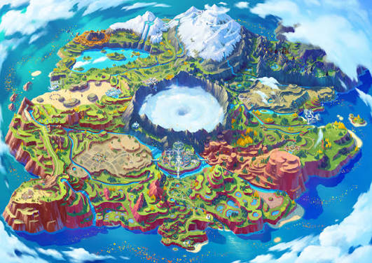

O mundo de Pokémon é vasto e dividido em várias regiões principais, cada uma inspirada em locais do mundo real (como partes do Japão, Havaí, França e Reino Unido). É em cada uma dessas regiões que os treinadores iniciam suas jornadas, escolhem seus parceiros iniciais e desafiam os Ginásios locais.
A primeira região apresentada na franquia (nos jogos Red, Blue e Yellow). Kanto é baseada na região de mesmo nome no Japão. É o lar dos primeiros 151 Pokémon e onde a jornada de Ash Ketchum e do Professor Carvalho começou.

Johto apareceu em Pokémon Gold e Silver & Pokémon Crystal e está a Oeste de Kanto. Possui uma nova Liga Pokémon e várias áreas especiais. A Equipe Rocket também está aqui, mas em força menor. No mangá, há uma outra organização: o Neo Team Rocket. Mais uma vez com base em uma área do Japão, a geografia de jogos baseia-se nas regiões de Kansai e Chubu do país. A configuração do jogo compartilha com estas regiões a sua abundância de templos, um projeto arquitectónico famoso das regiões de Kansai e de Tokai.
Johto possui muitas florestas, especialmente em seu centro-oeste. Possui em seu relevo também diversas cadeias montanhosas, especialmente na área mais ao leste, próximo à fronteira com Kanto.[3] Entre seus principais montes estão o Monte Mortar e o Monte Silver. Em seu lado mais oeste, entre baixas planícies, há a maior concentração populacional.

Introduzida na terceira geração (nos jogos Pokémon Ruby, Sapphire e Emerald), Hoenn é baseada na ilha de Kyushu, no Japão. A região é marcada por uma grande ênfase na relação entre terra e mar, refletida nos mascotes lendários Groudon e Kyogre, além da introdução das Batalhas em Dupla e dos Contests Pokémon.

Sinnoh é a região da quarta geração (Pokémon Diamond, Pearl e Platinum), baseada na ilha japonesa de Hokkaido. Conhecida por seu clima frio, montanhas nevadas e pela forte presença de mitos e lendas sobre a criação do universo Pokémon através de criaturas como Arceus, Dialga e Palkia.

Apresentada na quinta geração (Pokémon Black e White), Unova quebrou a tradição de se basear no Japão ao inspirar-se na área metropolitana de Nova York, nos Estados Unidos. É uma região cosmopolita, com grandes pontes, centros urbanos modernos e uma enorme variedade de novos Pokémon exclusivos dessa geração.

Introduzida na sexta geração (nos jogos Pokémon X e Y), Kalos é inspirada na França. A região tem o formato de uma estrela e é marcada pelos temas de beleza e elegância. Foi nela que o fenômeno da Mega Evolução foi descoberto, além de introduzir o tipo Fada e as Batalhas Aéreas.

Alola é a região da sétima geração (Pokémon Sun e Moon), baseada no estado tropical do Havaí, nos Estados Unidos. Composta por quatro ilhas principais e uma ilha artificial, a região substituiu os Ginásios tradicionais pelos Desafios de Ilha e introduziu as Formas Regionais (Alolan Forms) e os Movimentos Z.

Apresentada na oitava geração (Pokémon Sword e Shield), Galar é inspirada no Reino Unido. É uma região com forte cultura industrial e esportiva, onde as batalhas de Ginásio acontecem em grandes estádios lotados de torcedores. Galar trouxe o fenômeno Dynamax e Gigantamax, que tornam os Pokémon gigantescos em combate.

Paldea é a região da nona geração (Pokémon Scarlet e Violet), baseada na Península Ibérica (Espanha e Portugal). Sendo uma região de mundo aberto, ela conta com uma vasta extensão de campos, lagos e cidades vibrantes. É o lar da Academia Naranja/Uva e introduziu o fenômeno Terastal, que dá um brilho cristalino aos Pokémon e pode mudar seus tipos.
